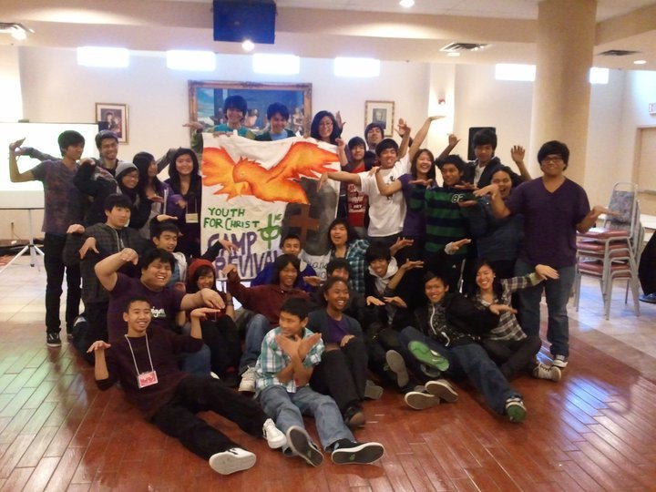
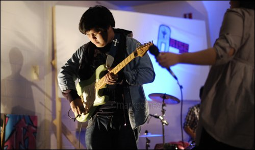

Professional Summary
I am a Computer Programming student with hands-on experience in full-stack development, backend systems, machine learning, and cybersecurity fundamentals. Through academic and team-based projects, I have developed practical skills in building applications, working with structured data, and designing solutions that are organized, reliable, and easy to use.
In addition to technical work, I bring leadership, communication, and coordination experience from past professional and volunteer roles. I value accountability, teamwork, and building systems that make work clearer and more effective for the people using them.
Professional Work Samples
My technical portfolio includes work in mobile development, backend application design, full-stack web development, machine learning, and cybersecurity. These projects are available in the Work Samples section of this portfolio.
Community Service / Volunteer Work
Youth For Christ (YFC) / Couples for Christ
Volunteer, Music Ministry Head – North York / Etobicoke Chapter
2010 – 2013
I served as the Music Ministry Head for Children’s Liturgy within the Youth For Christ ministry, the youth division of Couples for Christ. In this role, I was responsible for leading the music team for events involving the Kids for Christ (KFC) division.
This involved organizing music support for events, coordinating with volunteers, helping guide younger members, and contributing to a positive and structured environment for children and families in the community.
This experience helped strengthen my leadership, communication, teamwork, and event coordination skills — qualities that continue to influence how I work in technical and collaborative environments today.


Letters of Recommendation
Letters of recommendation are available upon request.
Awards & Recognition
Academic and professional achievements will be added to this portfolio as they are earned.